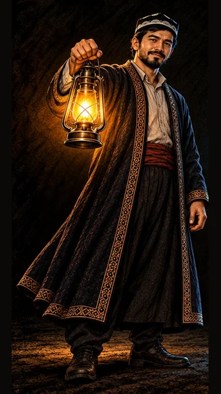

1-sahna — rasm, 9:16 (tik)
Medium shot at eye levelChatGPT'ga biriktiring:


Ovoz
Usta: «Telefoning eskirmagan. Balki faqat batareyasi charchagandir.»
ambertealnavy
Vertical 9:16 image, Medium shot at eye level. Attach the reference images of Usta and Diyor. Keep each character exactly as in their reference images: the same face, age, hair, beard, clothes and colours. Scene: a quiet tree-lined street in Tashkent on an autumn evening at golden hour: tall plane trees with yellow leaves, low warm sun, long soft shadows, a wide sidewalk with fallen leaves, a park bench, a few passers-by far away, small, softly out of focus, seen from the side or back, no clear faces. DIYOR (the naive guy about 20 years old with a round boyish face, big innocent eyes, messy straight jet-black hair (never curly, never brown), a dark navy blue hoodie, a black backpack, jeans and sneakers, outlined only by a thin soft cyan-blue glow) stands on the left, frowning angrily at the frozen smartphone in his hand, the phone screen dark and blank. USTA (the calm man about 30 years old with a fuller face and a short neat full jet-black beard, a black Uzbek doppi skullcap with white arch embroidery, a dark embroidered chapan robe with a red sash; young strong hands of a 30-year-old man, smooth skin) stands next to him on the right, turned toward the viewer with a calm knowing half-smile, one eyebrow slightly raised, as if about to share a secret. Every person has exactly two arms and two hands, five fingers on each hand, every hand clearly belongs to its own arm. Style: the same hand-painted semi-realistic cartoon illustration style as the attached reference images (painterly, visible brush texture), cinematic warm golden-hour light, colourful and eye-catching. Colour rule: the whole frame uses ONLY 3 main colours: warm amber gold, deep teal and night navy blue; everything else is soft dark neutral shadow. Vertical 9:16. No text, no letters, no numbers, no logos, no brand names, no watermark, no subtitles.